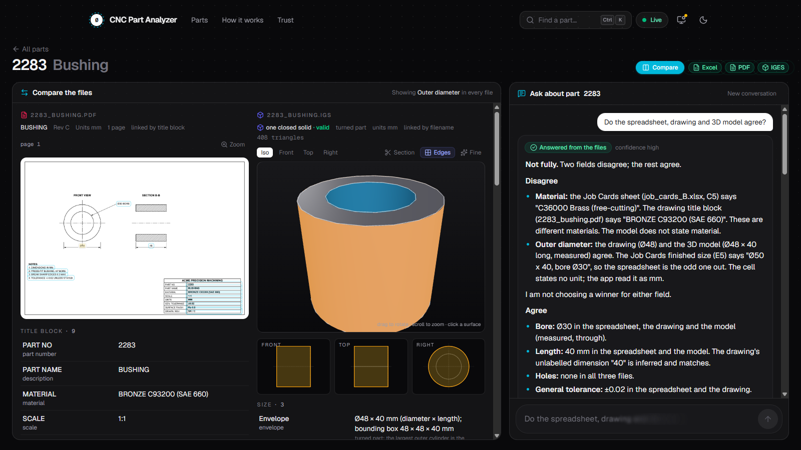
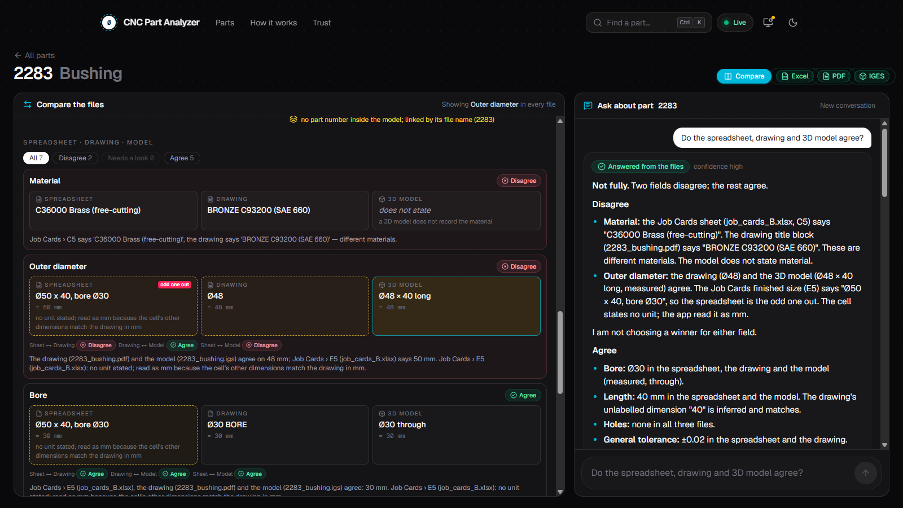
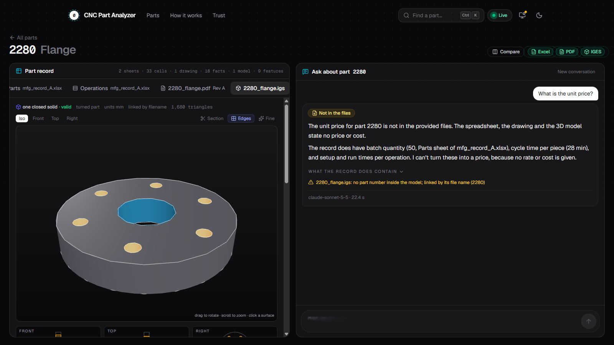
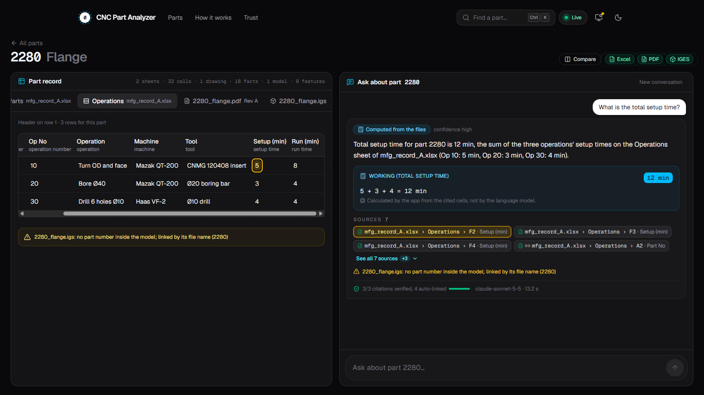
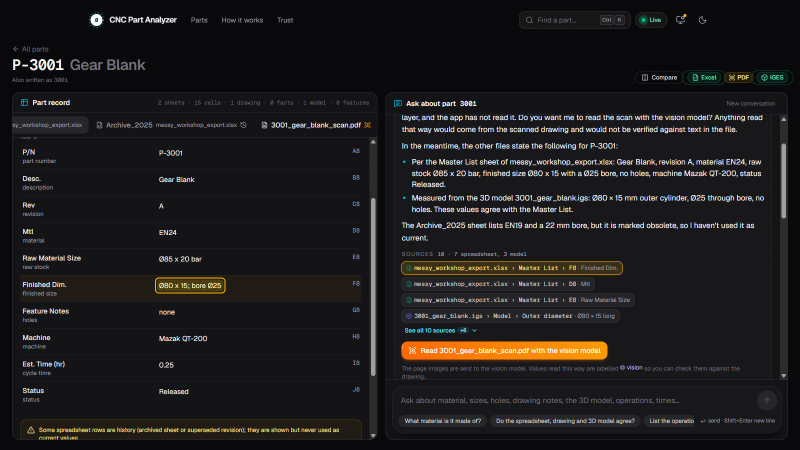

CNC Part
Analyzer
Ask about a part. Get an answer you can trace to the file it came from.
Excel record · PDF drawing · IGES 3D model, read and cross-checked
One part, three files, and they don't always agree
Excel
What the shop records: material, stock, machines, times. Every workbook is laid out differently.
What engineering specifies: title block, notes, dimensions, revisions. Some are scans.
IGES
The geometry itself: diameters, holes, size. Nobody reads it without CAD software.
A general chatbot fills the gaps with plausible guesses. On a shop floor a guess becomes a scrapped part.
Type a part number. Ask in plain language. Every value comes with its source.
- Reads all three file types, including messy exports and inch drawings
- Cites the exact cell, drawing callout or 3D model feature behind each value
- Compares the three files and names the one that differs, without "correcting" it
- Says "I can't find that in the provided files" instead of guessing
What a general chatbot can't do
Names the file that differs
Spreadsheet, drawing and model compared field by field. Two agree, one differs: it says which.
Every claim checked in code
A cited value must match the stored file, or it is dropped before you see it.
Reads the 3D model
Diameters, bores, hole patterns, volume, measured by a CAD kernel, each with how it was measured.
See it in every file
Click a value: the cell, the drawing callout and the model face light up together.
Asks before reading a scan
Scanned drawings are flagged; the vision model reads them only after a yes.
Maths in code, gaps admitted
Totals and unit conversions computed with the working shown; missing data said plainly.
The drawing and the model agree on Ø48. The job card is the odd one out.
All three values cited. Nothing corrected: the drawing might be the one out of date.
Planted in the test data and caught, along with 3003's hole count (one part card says 6, everything else 4) and 3002's M6 thread matched to its Ø5 tap drill.
Click a value, see it in every file
Part 2283 with the outer diameter selected.
- Drawing: the Ø48 callout is marked on the page
- 3D model: the measured outer face lights up
- Front, top and right projections follow

The answer names the odd one out
Asked: "Do the spreadsheet, drawing and 3D model agree?"
- Each field shown per file, with the verdict for every pair
- The job card is flagged: Ø50 against Ø48
- The model can't state a material, and says so

Files become facts. Code checks them. The model only writes the sentence.
Each format read on its own terms
Excel
- Finds the header row, even under a banner
- Maps columns to 26 manufacturing fields
- P-3001, 003001 and 3001 are one part
- Archived and superseded rows kept as history
- Title block, notes, dimensions, revisions
- Rotated text and pages turned upright
- Follows "SEE NOTE 3" to the note
- Scans flagged; vision only with consent
IGES
- OpenCascade, in a worker with time and memory limits
- Holes vs bosses, through vs blind, PCD vs grid
- Envelope measured in the part's own frame
- Never states material, tolerance or weight
Geometry measured, not guessed
Part 2280 flange with its hole pattern selected.
- 6 × Ø10 through on Ø90 PCD, found by the CAD kernel
- Every feature says how it was measured
- Asked for a price, it says no file has one

The model writes. Code decides what is true.
Never left to the model
Reading values from files, converting units, adding numbers, comparing files, reading a scan without a yes.
- Structured answer: status, text, cited fact ids with quoted values
- Verifier drops any citation that doesn't match the file
- File text is data: injected instructions are refused
- Claude first, Groq on failure, offline rules with no keys
The maths is done in code
Part 2280: "What is the total setup time?"
- 5 + 3 + 4 = 12 min, worked by the app, not the model
- Each source chip opens its cell in the record
- 3 of 3 citations verified against the workbook

Asks before reading a scan
Part P-3001: the drawing is an image with no text layer.
- Says it can't read the drawing yet, and why
- Answers from the sheet and the model meanwhile
- The archived row is noted, never used as current

It runs today, and it is tested
- One command to run it: docker compose up --build
- Works without API keys, on a deterministic offline engine
- Mature open stack: FastAPI, PostgreSQL, OpenCascade, Next.js
- Caveat: the sample 3D models were generated from the answer keys
Catch the mismatch before the metal is cut
Process planners
Answers in seconds instead of opening three files, with the source one click away.
Quality and inspection
Spreadsheet, drawing and model disagreements flagged before production, not found on the part.
Engineering
An audit trail: every answer, citation and model call is stored and can be reviewed.
Trust comes from traceability: an answer you can check is an answer you can act on.
Built to extend
- STEP files: the same kernel already reads them
- Slots, pockets and keyways on prismatic parts
- Linking drawing callouts to geometry through leader lines
- Accounts and per-team workspaces
Adding a source means writing one reader to the shared fact shape; the answer pipeline does not change.
Every answer,
traced to its source.
github.com/Ahmedgito/CNC_Analysis · try part 2283 → Compare